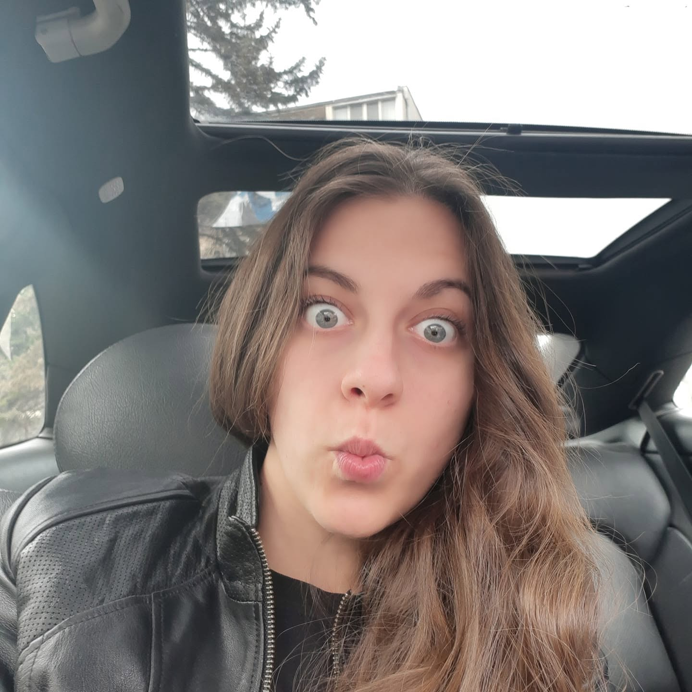

Clear explanation
You know what is coming and why.
Dr. Evgenia Nikolaeva
Every step of the treatment is explained clearly and in detail — what will happen, why it is needed and what you can expect, so you can feel calm and confident.
You know what is coming and why.
We pause whenever you need it.
Solutions planned with long-term results in mind.
Our services
Five main areas, presented honestly and in language that is easy to understand. Open the cards to learn more.
It is better to prevent than to treat.
Patience is the key to a child's trust.
The best work is the work that looks natural.
When saying goodbye is the best solution.
The drill only sounds scary.
Your first visit
No surprises and no decisions made for you. First we understand the situation, then we choose the direction together.
We talk about the problem and your expectations.
We perform a careful examination.
We explain the situation in detail.
We discuss the possible solutions and answer your questions.
We choose the most suitable method together and begin work only after mutual consent.
No template approach
There is no universal patient — so there is no universal approach.
With anxious patients and children's first visits, we do not rush. Sometimes we do less at the first appointment in order to achieve something more important — helping the patient relax and trust us.
For patients with other diseases, we adapt dental treatment to their general condition, medications and individual needs. When necessary, we coordinate the approach with the treating physician.
Fillings, crowns and dentures made by us can be checked and adjusted when needed. If you have a question or something concerns you, we will discuss it and make the necessary correction.

About Dr. Evgenia Nikolaeva
Dr. Evgenia Nikolaeva graduated from the Faculty of Dental Medicine at the Medical University of Sofia in 2019 and has practised as a dentist since then.
Patients most often appreciate her patience and careful work. She does not rush, gives breaks whenever needed and takes the time necessary for treatment to pass as calmly as possible.
In her work, she aims to offer only solutions that make sense and can provide a lasting result.
“I do not like selling rainbows. I prefer to explain honestly what is possible and do something that will last.”
Her special interests are in prosthetic and surgical dentistry. She continues her professional development through practical courses and additional training.
And because of her youthful appearance, she often hears: “There is no way you are the doctor!” — usually right before proving otherwise.
Frequently asked questions
Short answers to the practical questions patients ask most often.
First, we talk about the problem and your expectations, then we perform a careful examination. We explain the situation in detail, discuss the possible solutions and answer your questions. We choose the most suitable method together and begin work only after mutual consent.
Prepare your child beforehand by speaking calmly and honestly. Do not promise that there will be no drill or anaesthesia. Explain that what is needed will be done, but there is nothing scary and the dentist will explain what will happen in a way the child can understand.
If the child cries or does not cooperate, do not scold them and do not raise your voice — this increases the stress. Stay calm and follow the dentist's guidance. With more anxious children, we use a playful approach and different adaptation techniques, so it is important that the parent gives us time and space to win the child's trust.
Please inform us about all diseases, allergies and medications you take — even if you think they are not related to dental treatment. Withholding this information may create a risk for your health. When necessary, we coordinate the approach with your treating physician.
Yes, the clinic works with the NHIF. Before your visit, you can contact us to clarify what is included in the package.
Treatment is teamwork. The dentist can do her 50%, but for a 100% result, the patient needs to follow the instructions and recommendations given.
Contact
We work only with booked appointments, so we can give every patient the time they need and avoid unnecessary waiting.
If we do not answer immediately, we are probably working with a patient. Message us on Viber and we will reply as soon as possible.